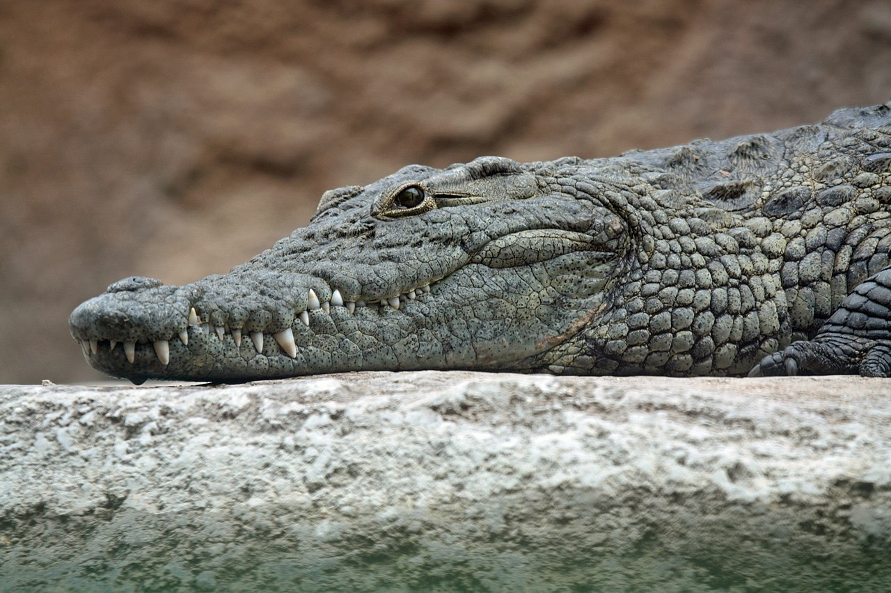

Crocodiles (family Crocodylidae) or true crocodiles are large semiaquatic reptiles that live throughout the tropics in
Africa, Asia, the Americas and Australia. The term crocodile is sometimes used even more loosely to include all extant
members of the order Crocodilia, which includes the alligators and caimans (family Alligatoridae), the gharial and false
gharial (family Gavialidae) among other extinct taxa. Although they appear similar, crocodiles, alligators and the gharial
belong to separate biological families.

Crocodile size, morphology, behaviour and ecology differ somewhat among species. However, they have many similarities
in these areas as well. All crocodiles are semiaquatic and tend to congregate in freshwater habitats such as rivers,
lakes, wetlands and sometimes in brackish water and saltwater. They are carnivorous animals, feeding mostly on vertebrates
such as fish, reptiles, birds and mammals, and sometimes on invertebrates such as molluscs and crustaceans, depending
on species and age. All crocodiles are tropical species that, unlike alligators, are very sensitive to cold. They
separated from other crocodilians during the Eocene epoch, about 55 million years ago. Many species are at the risk
of extinction, some being classified as critically endangered.